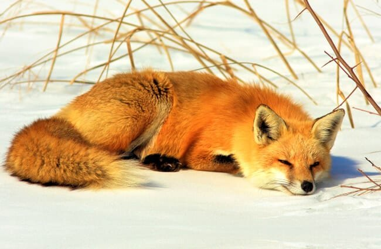
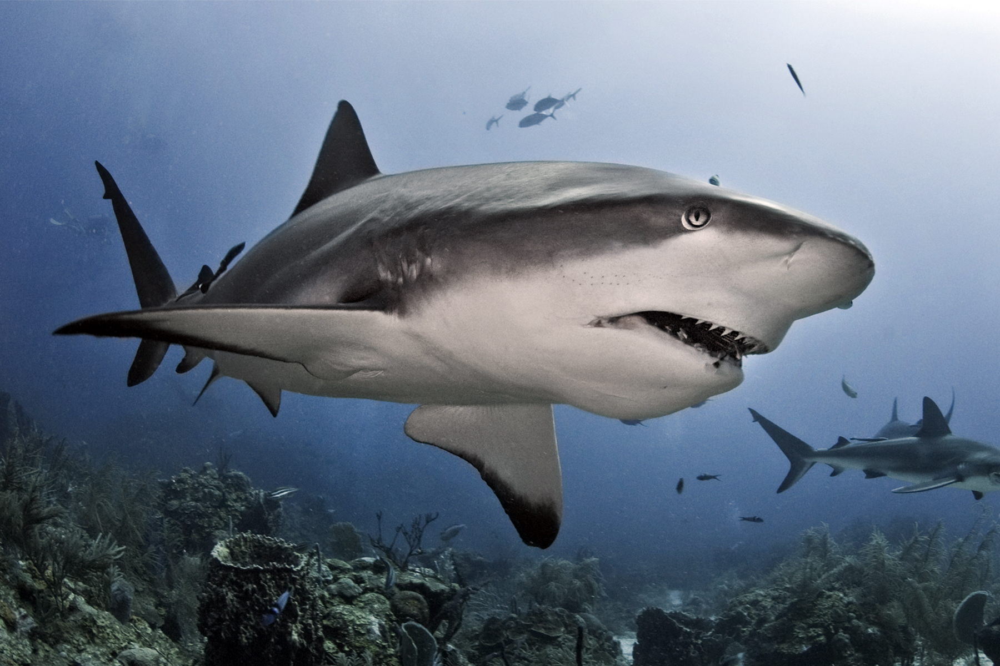

My Top 10 Favorite Pets
Otter
Otters are carnivorous mammals belonging to the Lutrinae subfamily. Fish and invertebrates make up the diets of the 13 extant otter species, which are all semiaquatic, aquatic, or marine.
Axolotl
Ambystoma mexicanum, also known as the axolotl, is a paedomorphic salamander related to the tiger salamander. The species was first discovered in many lakes, including Lake Xochimilco.
Goldfish
Carassius auratus is a freshwater fish belonging to the Cyprinidae family of the order Cypriniformes. One of the most popular aquarium fish, it is widely maintained as a pet in indoor aquariums.
Fox
Foxes are omnivorous small to medium-sized animals that belong to numerous species in the Canidae family. They feature a long bushy tail, a flattened cranium.
Scorpion
Scorpions belong to the order Scorpiones, which are predatory arachnids. They have eight legs and can be distinguished by a pair of gripping pincers and a slender.
Shark
Sharks occur in a variety of shapes and sizes, but the majority are long and slender (also known as streamlined) with extremely powerful jaws. Their teeth are changed on a regular basis throughout their lifetimes.
Hamster
Hamster shows include a display of the hamsters competing in the competition. The purpose of hamster grading is usually to promote hamsters that conform to natural or known hamster variations.
Shihtzu
The Shih Tzu is a Tibetan toy dog breed that originated in Asia. This breed is notable for its short snout, wide round eyes, ever-growing coat, floppy ears, and short and stout posture, as well as their ever-growing coat.
Rabbit
Rabbit, any of the 29 species of long-eared mammals in the Leporidae family (excluding hares) (genus Lepus). Rabbits are ground dwellers that can be found in a variety of environments, including deserts, tropical woods, and marshes.
Hedgehog
Hedgehogs belong to the Erinaceinae subfamily of the Erinaceidae eulipotyphlan family. Hedgehogs are divided into five genera and can be found in portions of Europe, Asia, and Africa, as well as New Zealand.